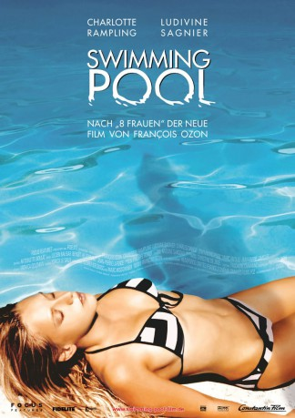

#11140 Swimming Pool
 
 IMDB-Wertung: 6.8 / 10
IMDB-Wertung: 6.8 / 10  Tomatometer: 83
Tomatometer: 83  Metascore: 70
Metascore: 70 
Die gefeierte britische Krimiautorin Sarah Morton ist trotz ihrer Erfoge in einer Schaffenskrise gelandet, weswegen sie das Angebot ihres Verlegers Bosload annimmt, einige Wochen in dessen Haus in Südfrankreich auszuspannen. In der Naturidylle scheint sich auch die drohende Schreibblockade abzuwenden, als Bosloads uneheliche 19jährige Tochter Julie ins Haus stolpert, die sich vor dem nächsten Job ebenfalls etwas erholen will. Die unterkühlte Autorin und die lässig-lockere Teenagerin vertragen sich auch prompt gar nicht miteinander, denn Sarah fühlt sich in ihrer Ruhe gestört und Julie bringt nicht nur das Haus in Unordnung, sondern auch andauernd neue Männer mit nach Hause. Dennoch übt ihre lolitahaft-laszive Offenheit auch bei Sarah Veränderungen aus, ihre gefühlsmäßige Arktis zerbröselt und als sie Julies Tagebuch liest und ihre Geschichte hört, kommt ihr eine ganz neue Idee für einen Roman wider ihren sonstigen Büchern.
Jahr: 2003
Dauer: 102 Minuten
FSK: 12
Land: Frankreich Studio: Constantin FilmTonspuren:
Untertitel:
Auflösung: 1080p (1920x1040) Größe: 9308 MB
Genre: Thriller, Drama, Krimi, Mystery
Regisseur: François Ozon
Drehbuch: François Ozon, Emmanuèle Bernheim, Sionann O'Neill
Soundtrack: Philippe Rombi
Darsteller:
 Charlotte Rampling als Sarah Morton
Charlotte Rampling als Sarah Morton Ludivine Sagnier als Julie
Ludivine Sagnier als Julie Charles Dance als John Bosload
Charles Dance als John Bosload Michel Fau als First Man
Michel Fau als First Man- Jean-Claude Lecas als Second Man
- Frances Cuka als Lady on the Underground
- Jean-Marie Lamour als Franck
- Marc Fayolle als Marcel
- Mireille Mossé als Marcel's Daughter
- Emilie Gavois-Kahn als Waitress at Cafe
- Erarde Forestali als Old Man
- Lauren Farrow als Julia
- Sebastian Harcombe als Terry Long
- Keith Yeates als Sarah's Father
- Tricia Aileen als John Bosload's Secretary
- Glen Davies als Pub Barman
Datei: X:\2003(N-Z)\Swimming Pool (2003, FSK12, 1920x1040).mkv seit 25.04.2019
Festplatte: HD 2003-2004-2005(A-F)
 Es gibt insgesamt 46 Filme in der Gruppe '2003(N-Z)'
Es gibt insgesamt 46 Filme in der Gruppe '2003(N-Z)'